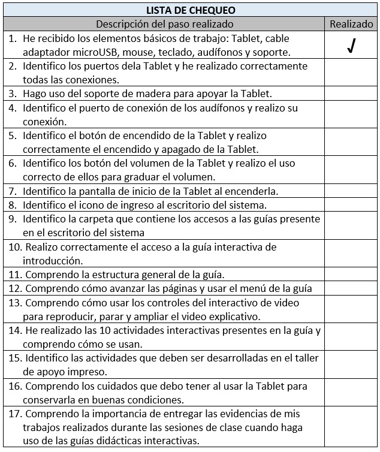

Material Educativo Elaborado por
Adriana Gutiérrez de la Cruz
Docente del área
Tecnología e Informática
I.E. Técnica Ciudad de Cali
Sede Buen Pator

Código JavaScript para el libro: Joel Espinosa Longi, IMATE, UNAM.
Recursos interactivos: DescartesJS
Fuentes: Lato y UbuntuMono
LICENCIA
 Creative Commons Attribution License 4.0.
Creative Commons Attribution License 4.0.
INFORMACIÓN BÁSICA DE LA GUÍA
Tabla de contenido
PRESENTACIÓN
Tecnología e Informática
Apropiación y Uso de la Tecnología
En este apartado siempre se presentará el objetivo principal de aprendizaje que trabajarás en la guía.
Objetivo de la presente guía: Comprender el uso básico de la Tablet, identificar la estructura general de la guía didáctica interactiva, hacer uso adecuado de diversas actividades interactivas de ejemplo y comprender la estructura del Taller de apoyo del estudiante.
Te animamos a que participes activamente de la presente guía y recuerda que puedes compartir en cualquier momento tus dudas para que juntos descubramos el camino. ¡Bienvenido!
Estructura de las Unidades de Aprendizaje
Aprendizaje esperado
* Identificar la estructura básica de la guía didáctica interactiva.
Contenido 1. Video Explicativo
Explicación del panel de control del video
Observa en la siguiente imagen cada componente y su correspondiente función.

Actividad Interactiva No.1
El presente ejemplo ilustra una sopa de letras donde deberas buscar 10 palabras en forma vertical u horizontal, cuentas con 12 intentos.
Para iniciar debes dar clic con el mouse sobre la primera letra de la palabra y mover el mouse hasta la ultima letra de la palabra y dar click de nuevo, si la seleccion es correcta se colocara en color verde, sino se colocara de color rojo.
¡Animate!... practiquemos un poco. Busca en la sopa de letras las 10 palabras relacionadas con el uso de la guía.
Actividad del Taller de Apoyo
En tu "Taller de Apoyo" encontrarás la actividad No.1 Lista de Chequeo, verifica cuales de los pasos que ya has realizado hasta el momento y rellena la casilla correspondiente.
A continuación te presentamos una imagen de la actividad para que puedas identificarla en tu taller de apoyo impreso.

Elementos Interactivos
Aprendizaje esperado
* Usar de forma adecuada las 12 actividades interactivas presentes en la guía.
Interactivo No.1 - Sopa de Letras con Imágenes
En esta sopa de letras debes buscar 7 palabras que corresponden a los nombres de los animales que observas en las imagenes, cuentas con 12 intentos.
¡Animate!... practiquemos un poco.
Recuerda: puedes colocar la tablet en posición horizontal para visualizar mejor el interactivo.
Interactivo No.2 - Selección Múltiple Tipo 1
Esta actividad es de seleccion múltiple con respuesta única.
Lee atentamente el enunciado y selecciona la respuesta que creas correcta dando click sobre el circulo de la izquierda.
verifica si tu respuesta es correcta dando click en el botón "VERIFICAR"
Al dar click en el botón "OTRO EJERCICIO" te saldra una nueva pregunta de selección múltiple. Al finalizar todas las preguntas sale el botón "RESULTADOS"
al dar click te mostrará cuantas respuestas obtuviste buenas.
Interactivo No.3 - Selección Múltiple Tipo 2
Esta actividad es de seleccion múltiple con respuesta única.
Lee atentamente el enunciado y selecciona la respuesta que creas correcta dando click sobre el circulo de la izquierda.
verifica si tu respuesta es correcta dando click en el botón "VERIFICAR"
Al dar click en el botón "OTRO EJERCICIO" te saldra una nueva pregunta de selección múltiple. Al finalizar todas las preguntas sale el botón "RESULTADOS"
al dar click te mostrará cuantas respuestas obtuviste buenas.
Interactivo No.4 - Identifica Imágenes
Esta actividad es de identificar imágenes haciendo clic según el enunciado. Ubicate sobre la imagen que consideres correcta y da click derecho.
Si la imagen es correcta se colocara un "√ verde" si es incorrecta se colocara una "X roja".
Interactivo No.5 - Secuencia de Imágenes
Esta actividad es de secuencia de imágenes para armar una imagen completa o una secuencia temporal.
Ubicate sobre la imagen y con click sostenido ubicala en una casilla.
al terminar de ubicar todas las imágenes dale click al botó "verificar".
Interactivo No.6 - Clasificación de Imágenes
Esta actividad es para clasificar imagenes de animales, acorde con la especie a la que pertenecen.
Ubicate sobre la imagen y con click sostenido llevala hasta una de las casilla.
al terminar de ubicar todas las imágenes dale click al botó "verificar".
Interactivo No.7 - Completar Frase
Esta actividad es para completar frases ubicando palabras.
Ubicate sobre la palabra y con click sostenido llevala hasta el espacio vacio donde creas que va.
Al terminar de ubicar todas las palabras dale click al botó "verificar".
La palabras que esten en el lugar correcto te apareceran resaltadas en color verde y la incorrectas en color rojo.
Interactivo No.8 - Rompecabezas
Esta actividad es para armar rompecabezas. Puedes activar la ayuda de una imagen traslucida de fondo para guiarte dando click en el botón "Con Muestra".
Ubicate sobre la parte a mover y con click sostenido llevala hasta el espacio donde creas que va ubicada.
Al terminar de ubicar todas las piezas te saldrá el nombre de la imagen.
Interactivo No.9 - Ubicar Partes
Esta actividad es para ubicar partes asociando las palabras a la partes de la imagen.
Ubicate sobre la flecha que señala la parte en la imagen y con click sostenido extiende la flecha hasta la palabra de la derecha.
Al terminar de ubicar todas las partes se activa el botón "verificar" que te mostrara las respuestas correctas y las incorrectas.
Interactivo No.10 - Ubicar Palabras
Esta actividad es para ubicar partes y palabras. Ubicando las palabras en las casillas según la imagen.
Ubicate sobre la palabra y con click sostenido llevala hasta la casilla que le corresponda según la parte que la flecha señala.
Al terminar de ubicar todas las palabras se activa el botón "verificar" que te mostrara las respuestas correctas y las incorrectas.
Interactivo No.11 - Verdadero o Falso
Esta actividad es para responder verdadero o falso a un enunciado.
Lee cada frase y selecciona "V" si es verdadera o "F" si es falsa.
Al terminar de responder todas las frases se activa el botón "verificar" que te mostrara las respuestas correctas y las incorrectas.
Interactivo No.12 - Si o No
Esta actividad es para responder Si o No a un enunciado.
Lee cada frase y con click sostenido desplaza la frase hacia la derecha para responder "SI" y a la izquierda para responder "NO".
Al terminar de responder todas las frases se activa el botón "verificar" que te mostrara las respuestas correctas en verde y las incorrectas en rojo.
Cierre
Síntesis de los Aprendizajes
Hemos llegado al final de la presente Guía
Gracias a los aprendizajes adquiridos estas en capacidad de:
• Realizar la conexión de mouse y teclado en tablets.
• Ejecutar el encendido y apagado de la tablet de forma adecuada.
• Acceder al contenido de la Guía desde iconos de acceso rápido.
• Usar correctamente el panel de control de la reproducción de videos.
• Usar de forma adecuada 12 tipos de actividades interactivas.
• Guardar evidencia de las actividades realizadas.
¡Buen Trabajo!
Rúbrica
A continuación se presenta la rúbrica correspondiente al desempeño trabajado en la presente guía.
Autoevaluación
Recuerda realizar tu autoevaluación en el Taller de Apoyo.
Bibliografía
La presente obra reconocen y respeta todos los derechos de Autor.
La información, imágenes y videos han sido usados con fines educativo. Esta obra es de licencia Creative Commons (no comercial)
Acorde con lo previsto en la Ley 23 de 1982 Art. 32 y 33